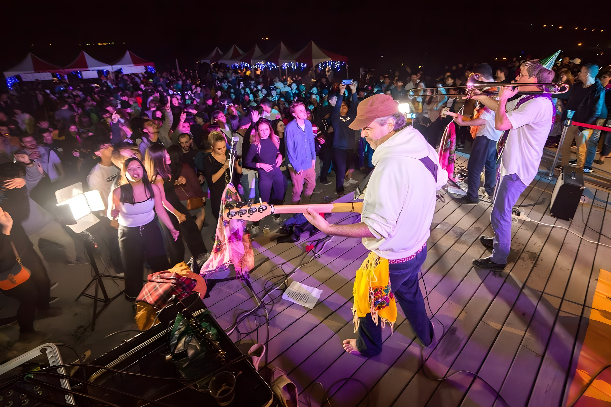
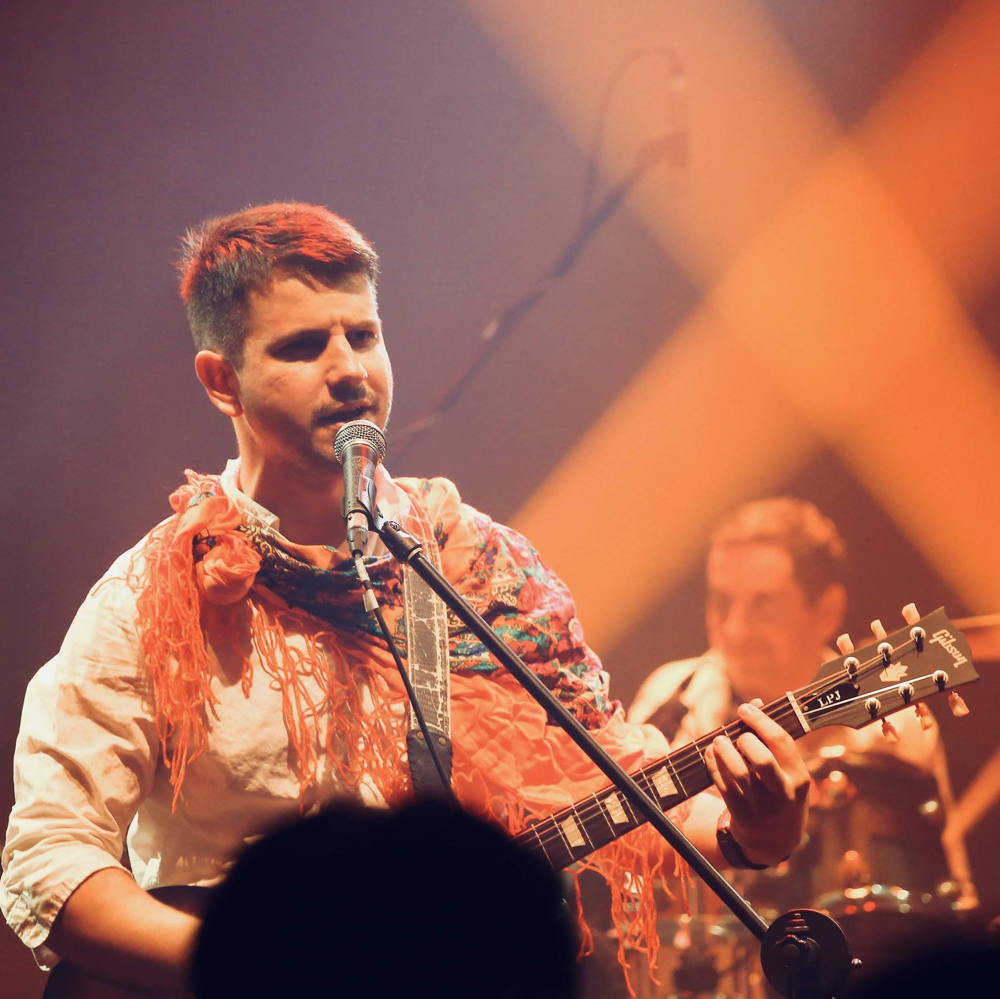

La Cumbia Balkanska · 2012
台北早期的演出，聽聽當時 Cumbia 加巴爾幹音樂是什麼樣子。
Balkazar · 吉他／主唱
來自貝爾格勒，在台北彈吉他、唱歌。喜歡巴爾幹音樂，也喜歡搖滾、龐克。
Marko Fuzzy Balkañero · Balkazar 主唱暨創團成員
Marko Djurasic 來自塞爾維亞貝爾格勒。他是台北 Balkazar 的主唱、吉他手，也是創團成員；另外也在車庫龐克樂團 Fuzzy Wall 彈吉他。有時候演出會用 Marko Fuzzy Balkañero 這個名字。
2010 年搬來台灣之前，Marko 在貝爾格勒玩搖滾和龐克，待過 Potkrovlje 25 和 Prljava Familija。他在 Potkrovlje 25 彈主奏吉他，也演奏樂團的原創歌曲。當年留下了一些海報和錄音，跟現在的 Balkazar 聽起來很不一樣，但那也是他的音樂經歷。
2012 年，Marko 和來自哥倫比亞、法國的樂手組成 La Cumbia Balkanska，把巴爾幹旋律和哥倫比亞的 Cumbia 混在一起玩，2013 年還到日本演出。後來大家走上不同的音樂路線：一部分成為 La Cumbia del Sol，Marko 和其他樂手則組成 Balkazar。往下滑還能看到當年的影片。
Marko 喜歡拿傳統巴爾幹歌曲試試電吉他的玩法。有時候是七拍子，有時候加點 Ska、Reggae 或搖滾，也喜歡改編和現場即興。唱歌時會用到塞爾維亞語、英文、西班牙語或中文，看當天唱哪首歌。

跟著 Balkazar，Marko 從台北的小酒吧一路玩到 Urban Nomad、Taiwan Ska Fest、虎山音樂祭、Celebration Canada 和歐洲聖誕市集。其他演出、老照片和新聞可以看音樂祭紀錄。2019 年還有一場難忘的演出：Balkazar 在台北 Triangle 擔任 Fermín Muguruza 的現場伴奏樂團。
另外，他也玩過 Earsore、BRIJ，並在音樂工作坊分享過巴爾幹音樂，包括 2020 年的 Balkan in Your Area。現在也還是有在 Fuzzy Wall 彈吉他。

以前的演出
不是每場演出都有錄影，不過還是找得到一些老影片和資料。現在回頭看，也滿有意思的。
演出影片
這裡有早期的影片、Balkazar 的音樂祭現場，還有一部樂團紀錄片。
台北早期的演出，聽聽當時 Cumbia 加巴爾幹音樂是什麼樣子。
短影片看不完一整場演出，這邊有當年的音樂祭紀錄。
一部關於 Balkazar、音樂和樂團身邊朋友的紀錄片。
演出資料
一些過去的報導、演出公告與工作坊資料。
演出 · 工作坊 · 合作
想邀請 Balkazar 演出，或安排巴爾幹音樂工作坊，可以直接聯絡我們。